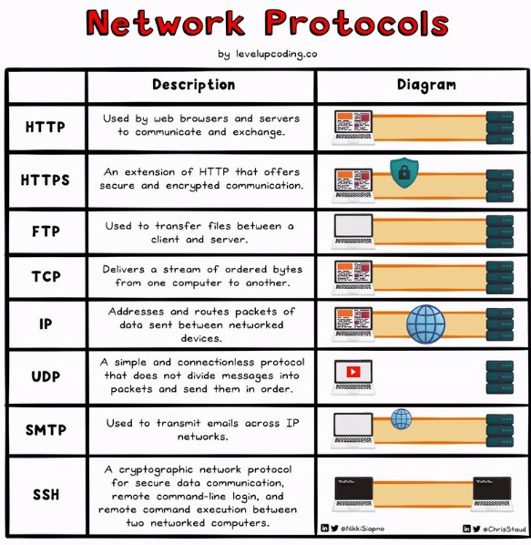
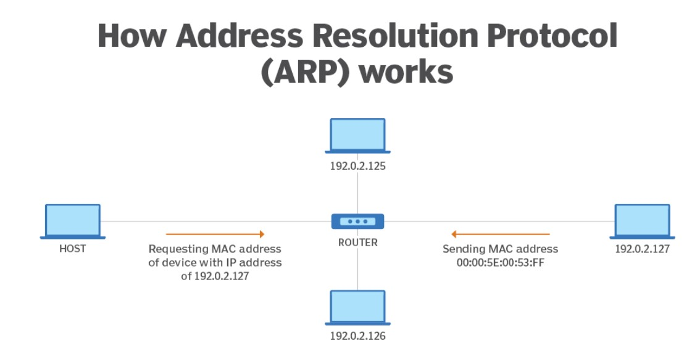
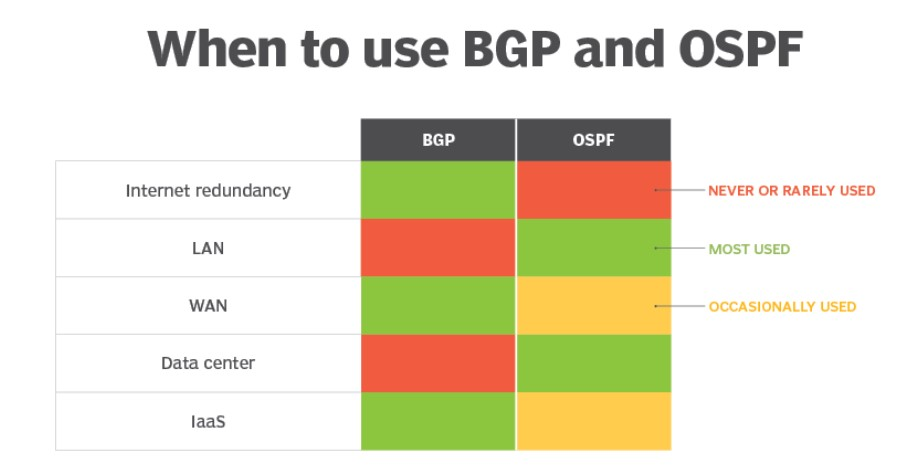
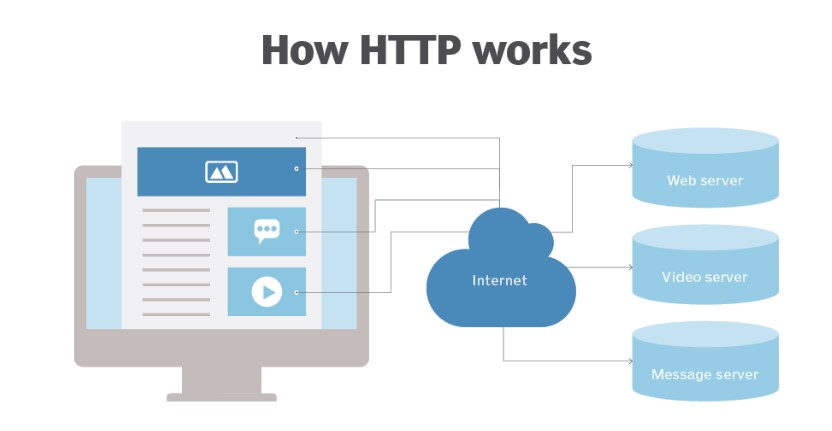
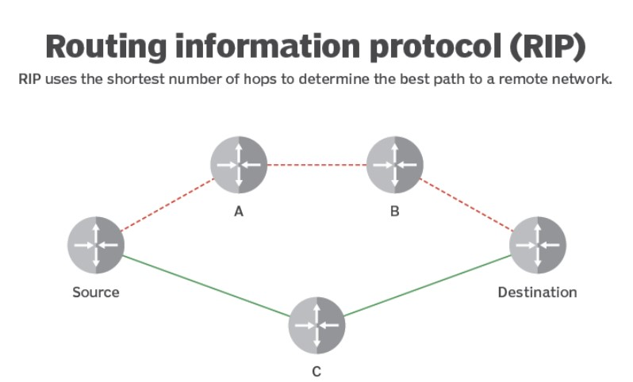

Network protocols are standardized rules and conventions that govern communication between devices and systems in a computer network. These protocols define how data is formatted, transmitted, received, and acknowledged, ensuring reliable and efficient communication across various network architectures and technologies. They operate at different layers of the network stack, providing specific functionalities such as addressing, routing, error detection and correction, flow control, and security. Network protocols enable interoperability between different devices and systems, facilitating seamless communication over local area networks (LANs), wide area networks (WANs), and the internet.
ARP translates IP addresses to MAC addresses and vice versa so LAN endpoints can communicate with one another. ARP is necessary because IP and MAC addresses are different lengths. Below is a breakdown of the various address lengths:
IP version 4 (IPv4) addresses: 32 bits.
IPv6 addresses: 128 bits.
MAC addresses: a device's physical hardware number -- are 12 hexadecimal digits split into six pairs.
Translations between these addresses must occur for proper device communication. ARP isn't required every time devices attempt to communicate because the LAN's host stores the translated addresses in its ARP cache. As a result, the ARP translation process is mainly used when new devices join the network.
BGP makes the internet work. This routing protocol controls how packets pass through routers in an autonomous system (AS) -- one or multiple networks run by a single organization or provider -- and connect to different networks. BGP can connect endpoints on a LAN to one another, and it can connect endpoints in different LANs to one another over the internet.
External BGP directs network traffic from various ASes to the internet and vice versa. Internal BGP directs network traffic between endpoints within a single AS.
DNS is a database that includes a website's domain name and its corresponding IP addresses. People use a domain name to access a website, while devices use an IP address to locate a website.
DNS translates the domain name into IP addresses, and these translations are included within the DNS. Servers can cache DNS data, which is required to access the websites. DNS also includes the DNS protocol, which is within the IP suite and details the specifications DNS uses to translate and communicate.
DHCP assigns IP addresses to network endpoints so they can communicate with other network endpoints over IP. Whenever a device joins a network with a DHCP server for the first time, DHCP automatically assigns it a new IP address and continues to do so each time a device moves locations on the network.
When a device connects to a network, a DHCP handshake takes place. In this handshake process, the device and DHCP server communicate using the following steps:
FTP is a client-server protocol, with which a client requests a file and the server supplies it. FTP runs over TCP/IP -- a suite of communications protocols -- and requires a command channel and a data channel to communicate and exchange files, respectively. Clients request files through the command channel and receive access to download, edit and copy the file, among other actions, through the data channel.
FTP has grown less popular as most systems began to use HTTP for file sharing. However, FTP is a common network protocol for more private file sharing, such as in banking.
Like FTP, HTTP is a file sharing protocol that runs over TCP/IP. But HTTP primarily works over web browsers and is commonly recognizable for most users. When a user enters a website domain and aims to access it, HTTP provides the access. HTTP connects to the domain's server and requests the site's HTML, which is the code that structures and displays the page's design.
Another form of HTTP is HTTPS, which stands for HTTP over Secure Sockets Layer or HTTP Secure. HTTPS can encrypt a user's HTTP requests and webpages. This provides more security to users and can prevent common cybersecurity threats, such as man-in-the-middle attacks.
IP functions similarly to a postal service. When users send and receive data from their device, the data gets spliced into packets. Packets are like letters with two IP addresses: one for the sender and one for the recipient.
After the packet leaves the sender, it goes to a gateway, like a post office, that directs it in the proper direction. Packets continue to travel through gateways until they reach their destinations.
IP is commonly paired with TCP to form TCP/IP, the overall internet protocol suite. Together, IP sends packets to their destinations, and TCP arranges the packets in the correct order, as IP sometimes sends packets out of order to ensure the packets travel the fastest ways.
OSPF works with IP to send packets to their destinations. IP aims to send packets on the quickest route possible, which OSPF is designed to accomplish. OSPF opens the shortest, or quickest, path first for packets. It also updates routing tables -- a set of rules that control where packets travel -- and alerts routers of changes to the routing table or network when a change occurs.
OSPF is similar to and supports Routing Information Protocol, which directs traffic based on the number of hops it must take along a route, and it has also replaced RIP in many networks. OSPF was developed as a more streamlined and scalable alternative to RIP. For example, RIP sends updated routing tables out every 30 seconds, while OSPF sends updates only when necessary and makes updates to the particular part of the table where the change occurred.
SMTP is the most popular email protocol, is part of the TCP/IP suite and controls how email clients send users' email messages. Email servers use SMTP to send email messages from the client to the email server to the receiving email server. However, SMTP doesn't control how email clients receive messages -- just how clients send messages.
That said, SMTP requires other protocols to ensure email messages are sent and received properly. SMTP can work with Post Office Protocol 3 or Internet Message Access Protocol, which control how an email server receives email messages.
Telnet is designed for remote connectivity, and it establishes connections between a remote endpoint and a host machine to enable a remote session. Telnet prompts the user at the remote endpoint to log on. Once the user is authenticated, Telnet gives the endpoint access to network resources and data at the host computer.
Telnet has existed since the 1960s and was arguably the first draft of the modern internet. However, Telnet lacks sophisticated security protections required for modern communications and technology, so it isn't commonly used anymore.
TCP is the other half of TCP/IP and arranges packets in order so IP can deliver them. Specifically, TCP numbers individual packets because IP can send packets to their destinations through different routes and get them out of order, so TCP amends this before IP delivers the packets.
TCP also detects errors in the sending process -- including if any packets are missing based on TCP's numbered system -- and requires IP to retransmit those packets before IP delivers the data to its destination. Through this process, the TCP/IP suite controls communication across the internet.
UDP is an alternative to TCP and also works with IP to transmit time-sensitive data. UDP enables low-latency data transmissions between internet applications, making it ideal for VoIP or other audio and video requirements.
Unlike TCP, UDP doesn't wait for all packets to arrive or organize the packets. Instead, UDP transmits all packets even if some haven't arrived.
Network security involves the protection of computer networks and the data transmitted across them from unauthorized access, misuse, alteration, or destruction. It encompasses various technologies, policies, procedures, and practices designed to ensure the confidentiality, integrity, and availability of network resources and data. Key components of network security include:
Implementing mechanisms to authenticate and authorize users and devices accessing the network, ensuring that only authorized individuals can access sensitive information and resources.
Deploying firewalls to monitor and control incoming and outgoing network traffic based on predetermined security rules, protecting against unauthorized access and malicious activities.
Utilizing IDPS to detect and prevent unauthorized access, intrusion attempts, and malicious activities within the network in real-time.
Implementing encryption protocols and technologies to secure data transmission over the network, ensuring that data remains confidential and protected from eavesdropping and interception.
Establishing VPNs to create secure encrypted tunnels over public networks, allowing remote users to access the network resources securely.
Dividing the network into separate segments or subnetworks to limit the scope of potential security breaches and contain any security incidents that occur.
Regularly updating and patching network devices, operating systems, and software applications to address known vulnerabilities and security flaws, reducing the risk of exploitation by attackers.
Developing and enforcing security policies, guidelines, and procedures governing the use of network resources and educating users about best practices for network security awareness.
Establishing incident response procedures to promptly detect, respond to, and mitigate security incidents and breaches, minimizing their impact on the network and organization.
Conducting regular security audits, vulnerability assessments, and penetration testing to identify and remediate security weaknesses and ensure compliance with regulatory requirements.
By implementing a comprehensive network security strategy that combines these measures and adapts to evolving threats and technologies, organizations can effectively safeguard their networks and data assets from a wide range of security risks and cyber threats.